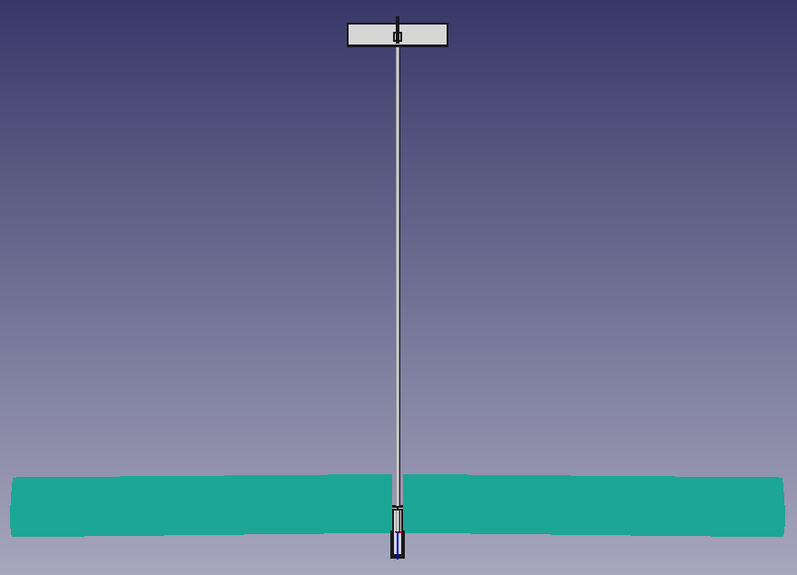
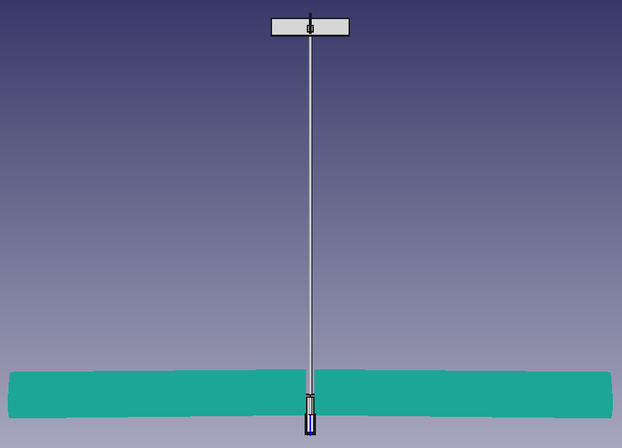

Iteration 7?: Stability 2
Contents
Iteration 7?: Stability 2#
from unyt import km, m, mm, inch, g, kg, hr, minute, s, degree, radian, volt
from IPython.display import Video
from statistics import mean
Center of Gravity Position#
b = 3100*mm # wingspan
c = 235*mm # chord
S = b*c # wing area
AR = b**2/S
print(f"AR: {AR}")
AR: 13.191489361702128 dimensionless
As a starting point I’ll assume the Center of Gravity (GC) can be placed at 33% cord length. Once I’ve calculated the neutral point I’ll come back to this.
xcg = (1/3)*c
Horizontal Tail Sizing#
…and assuming a 1/2 horizontal stabilizer (HS) cord center of lift and 1/3 cord CG:
ch = 185*mm # Horizontal stabilizer cord
bh = 500*mm # ..wingspan
lh = 1030*mm # ..moment arm
xhscl = (1/2)*ch
Sh = ch*bh # HS area
ARh = bh**2/Sh # = bh/ch
print(f"ARh: {ARh}")
Vh = (Sh*lh)/(S*c)
print(f"Vh: {Vh}")
ARh: 2.7027027027027026 dimensionless
Vh: 0.5565209772338965 dimensionless
A well-behaved aircraft typically has a Vh which falls in the following range:
Vh = 0.30 … 0.60
If Vh is too small, the aircraft’s pitch behavior will be very sensitive to the CG location. It will also show poor tendency to resist gusts or other upsets, and generally “wander” in pitch attitude, making precise pitch control difficult.
~.56 is perfect!
Approximate NP (neutral point) location xnp:
xnpr = .25+((1+2/AR)/(1+2/ARh))*(1-4/(AR+2))*Vh
xnp = xnpr*c
print(f"xnp ratio of c: {xnpr}")
print(f"xnp: {xnp}")
xnp ratio of c: 0.5213478253847141 dimensionless
xnp: 122.51673896540782 mm
SM = (xnp-xcg)/c
print(f"S.M.: {SM}")
S.M.: 0.18801449205138085 dimensionless
In general, the small positive S.M. suggested by rule (2) is the ideal situation. S.M. = +0.05 … +0.15     (2)
If we want to achieve a Static Margin of say, .10 I should move the CG back to:
goodSM = 0.10
xcgForGoodSm = -((goodSM * c) - xnp)
cgForGoodSm = xcgForGoodSm / c
print(f"Better CG might be: {xcgForGoodSm}")
print(f"Better CG ratio of cord: {cgForGoodSm}")
Better CG might be: 99.01673896540782 mm
Better CG ratio of cord: 0.42134782538471416 dimensionless
I’ll aim for a CG of 35% forward to 42% back. If the plane does feel too nose heavy I’ll move the CG back.
wantedXcgMin = .35 * c
wantedXcgMax = .42 * c
wantedXcgAvg = (wantedXcgMin + wantedXcgMax) / 2
print(f"Wanted CG: {wantedXcgMin} < cg < {wantedXcgMax} (about: {wantedXcgAvg})")
Wanted CG: 82.25 mm < cg < 98.7 mm (about: 90.475 mm)
Vertical Tail Sizing#
cv = 185*mm # Vertical stabilizer cord
bv = 230*mm # ..wingspan (height?)
lv = lh # ..moment arm
xvscl = (1/2)*ch
Sv = cv*bv # VS area
ARv = bv**2/Sv # = bv/cv
print(f"ARv: {ARv}")
Vv = (Sv*lv)/(S*c)
print(f"Vv: {Vv}")
ARv: 1.2432432432432432 dimensionless
Vv: 0.2559996495275924 dimensionless
Most well-behaved aircraft typically have a Vv which falls in the following range: Vv = 0.02 … 0.05
TODO: Got to here
Dihedral Angle#
Because I’ll be 3D printing the fuselage and the wings will be detachable, adding dihedral is fairly trivial. As a starting point I’ll pick 2° dihedral.
Υ = 2*degree # Dehedral angle (Upsilon)
CL = 0.1*(s**2/m) # From iteration 5
Spiral Stability#
B = (lv/b)*(Υ/CL)
print(f"B = {B}")
B = 12.754098360655737 degree*m/s**2
The dihedral angle of the wing, denoted by Υ in Figure 1, provides some degree of natural spiral stability. A spirally-unstable aircraft tends to constantly increase its bank angle at some rate, and therefore requires constant attention by the pilot. Conversely, a spirally-stable aircraft will tend to roll upright with no control input from the pilot, and thus make the aircraft easier to fly.
B > 5: spirally stable
B = 5: spirally neutral
B < 5: spirally unstable
So excellent, although as I should probably say more often: I have no idea what I’m doing and have a hunch these units aren’t correct, which would make this metric useless. Please help.
I guess I’ll just have to see how the plane behaves in-flight.
Roll Control#
Lakehopper has ailerons, so this might be of less interest.
A criterion for adequate roll authority is obtained by the product of Vv and B
VvB = Vv * B
print(f"VvB = {VvB}")
VvB = 1.1531216327501042 degree*m/s**2
VvB = 0.10 … 0.20
The 0.10 value will likely give marginal roll control, while 0.20 will give very effective control.
Excellent, but again, probably wrong.
Steady Sideslip in Turns#
As noted in the lab notes, for an airplane with ailerons, the inward rolling moment can be cancelled.
Conclusion#
According to these criterea, and if my calculations are correct, the plane should be pretty stable provided that I:
Increase the horizontal stabilizer slightly (~25%, 70 ü†ñ 88mm wing span )
Use my proposed 2° dihedral
Put the CG no further than ~30% cord length forward or ~47% backward
I implemented the first two changes in the FreeCAD model for iteration 6, which now looks like this:

 
